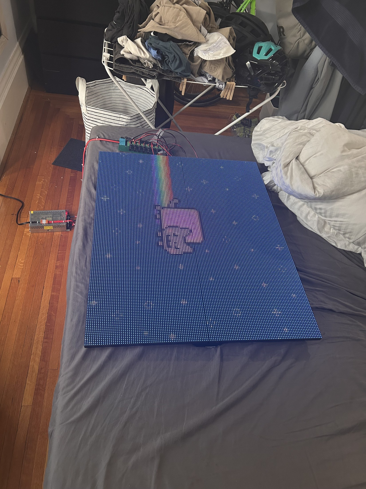
Building a 10-panel (2 wide x 5 tall) P5 HUB75 LED wall driven by a single ESP32-S3, with the goal of an interactive world map whose countries and flight paths can be recolored and animated live from a phone or laptop over WiFi. The project is being built in explicit stages, each one verified before the next is built on top of it, and firmware boots into one of a few distinct modes depending on what stage that verification is at.
Chaining 10 panels off one controller with no level shifter turned out to be a real signal-margin problem, not a config bug: panel edges would pick up a ghosted tint from a different panel's color further down the chain. Fixed by dropping the HUB75 I2S clock (HZ_16M -> HZ_10M) and maxing out the library's latch-blanking window -- the two changes only fully resolved it together. The custom PCB (below) also carries 3 logic-level-shifter ICs as the standard fix if ghosting reappears with a longer chain.
After the fix: a clean chain-scan test (each panel showing its own number with no bleed), then a full-wall color wash with no banding.
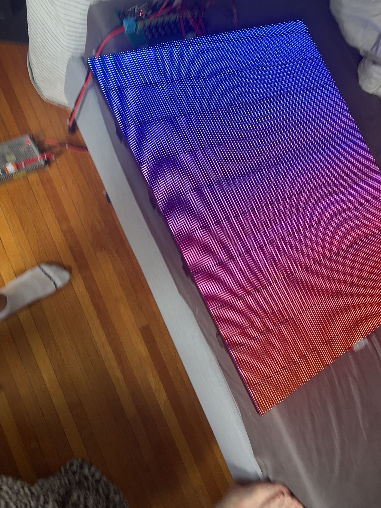
10 panels at full white/full brightness can draw 40-60A+ combined, so the wall is fed 5V/GND at multiple injection points along the chain rather than from a single connector -- a single injection point at that current would show up as visible brightness droop and ground-offset noise on the panels furthest from the supply.
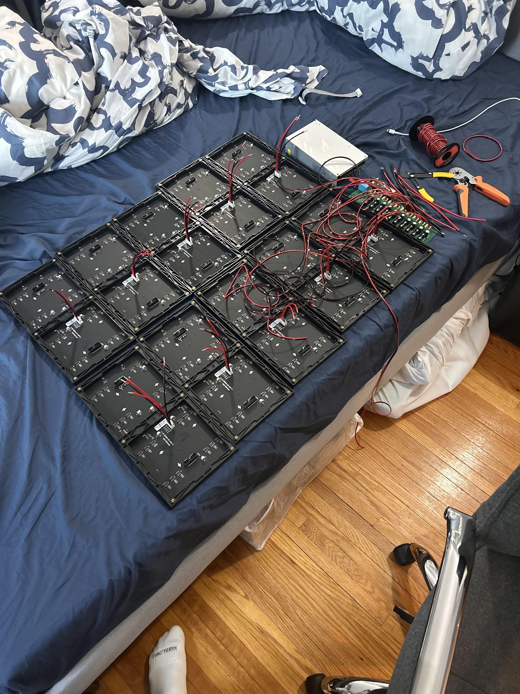
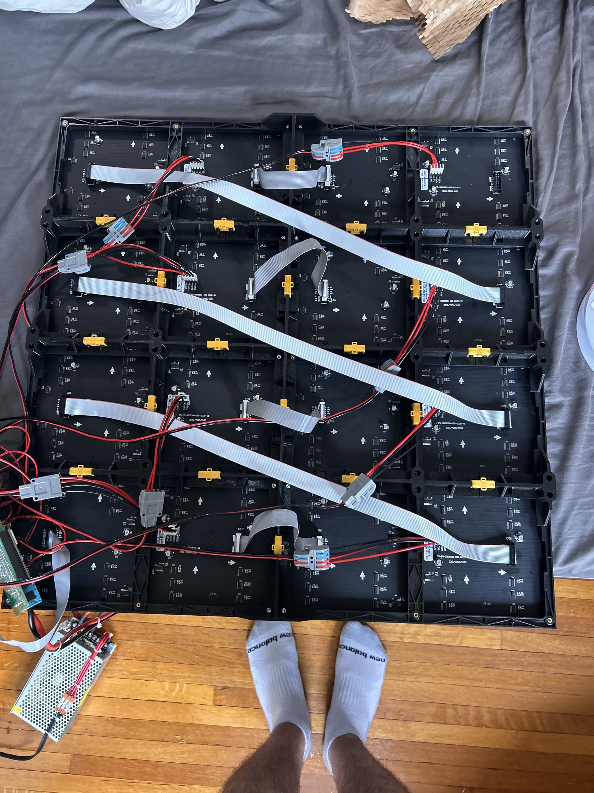
Panels are held in a flat, rigid 2x5 grid by custom 3D-printed corner brackets -- each one spans the join between up to four adjacent panels, screwed into the panels' existing mounting holes, so the wall has no separate backing sheet or enclosure holding it together.
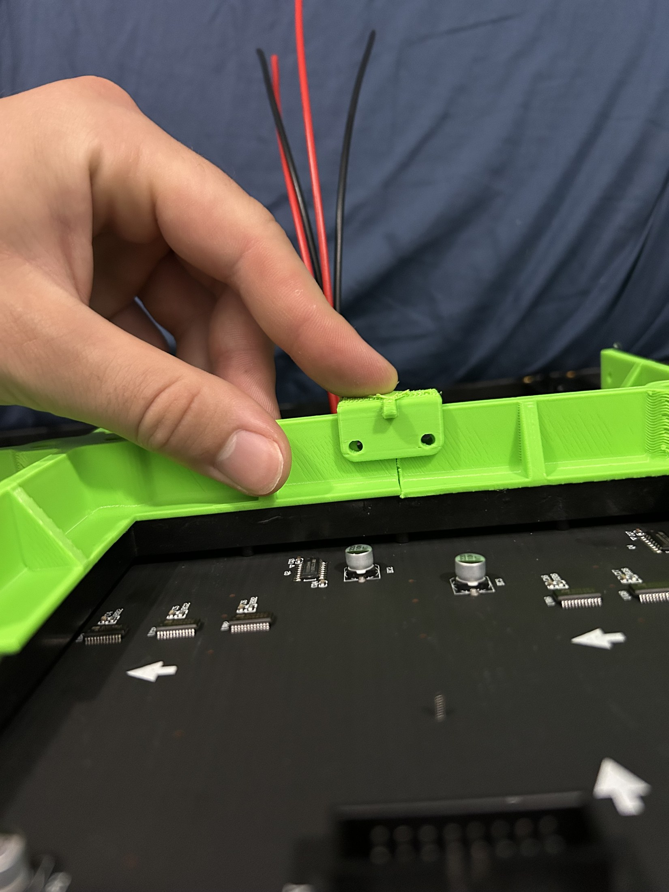
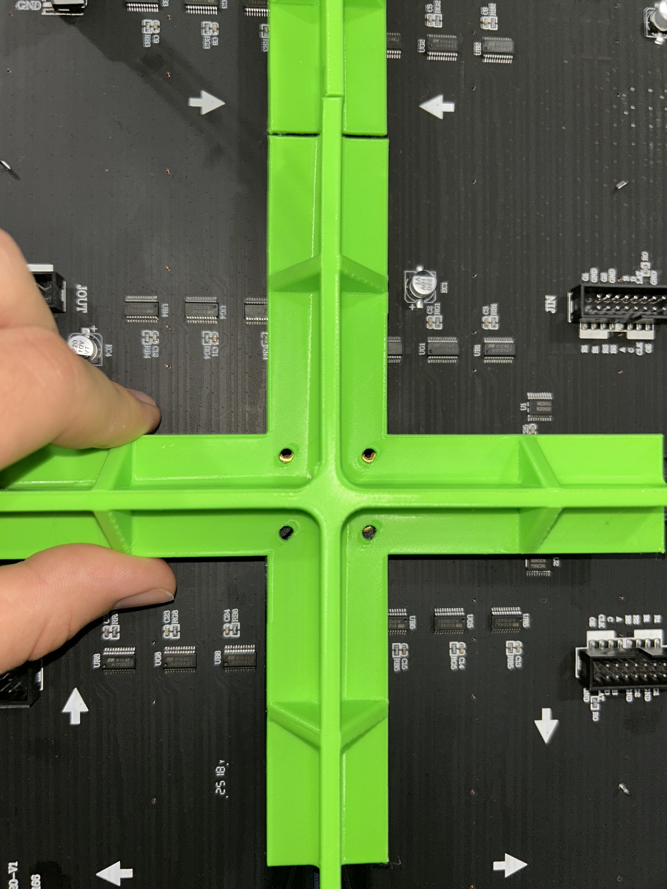
The "10 RGB LED Panel Controller" does two jobs at once: power distribution and signal buffering. Ten fused (5A) and individually capacitor-decoupled channels feed 5V/GND to the panel injection points off one 40A main input, and three SN74HCT245 octal bus transceivers buffer the HUB75 data/clock/latch/OE lines out of the ESP32-S3 before they reach the chain -- the level-shifting fix referenced above. Now on schematic revision v12.
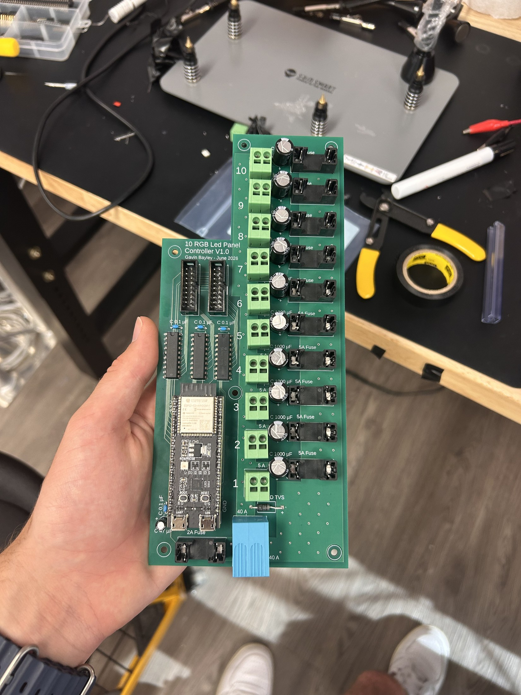
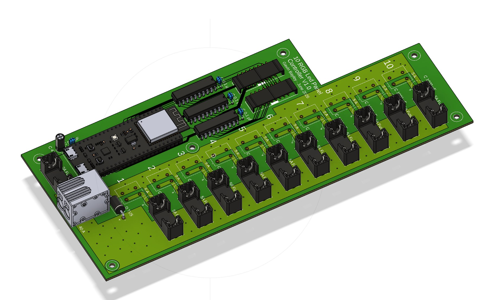
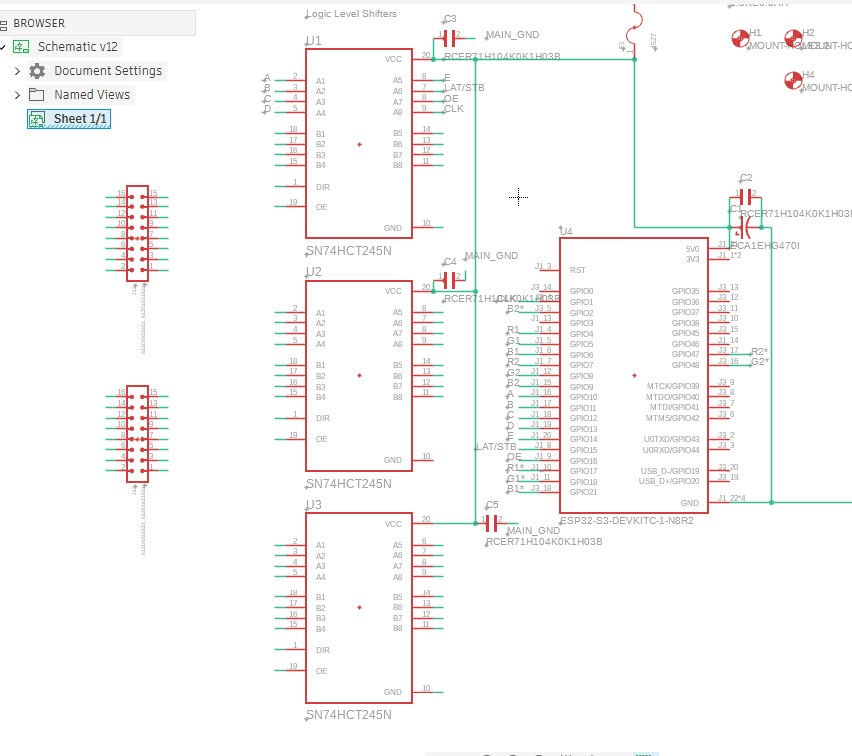
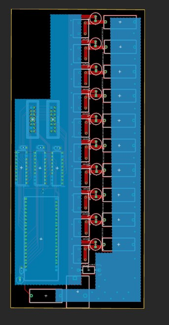
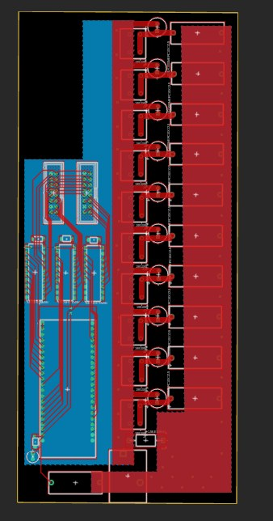
The firmware boots into exactly one mode, selected at compile time by a flag in
panel_config.h -- there's no runtime mode switch, so re-flashing is how the wall
changes what it does. Three modes exist so far, roughly in the order they were built.
CHAIN_SCAN_MODE is the bring-up/calibration mode used to find the panel chain
order, rotation, and signal settings from scratch -- it's what generated the numbered-panel
and ghosting-test photos above. Not a day-to-day mode; only used when re-deriving signal
settings after a hardware change (more panels, longer cable runs, a new board).
Built a WiFi upload server ahead of the original map-first roadmap. All image/GIF decoding happens in the browser, not on the ESP32 -- Canvas 2D for static images, and a hand-written GIF89a decoder (LZW decompression, disposal-method compositing, validated against Pillow output before porting to JS) for animations, so the page works fully offline on the device's own WiFi with no external libraries. The ESP32 only ever receives raw RGB565 pixel bytes. The animation buffer lives in PSRAM (up to 6MB / ~146 frames), guarded by a FreeRTOS mutex since the render loop advances animation frames on a timer while the upload handler can swap or free that same buffer from a different task -- without the mutex that's a real use-after-free, not just a visual glitch.
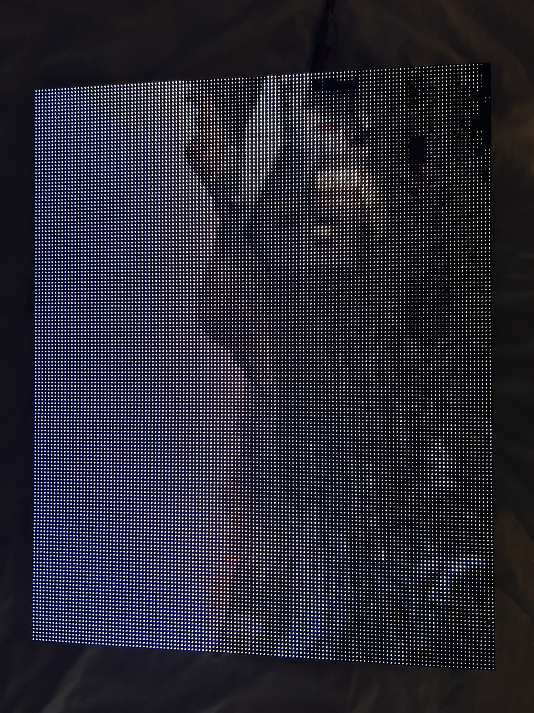
DASHBOARD_MODE is the newest mode, and a deliberate change in approach from image
upload: it's fully on-device, with no companion browser or server involved at runtime. On
boot the wall connects to WiFi, syncs time over NTP, and then runs its own periodic HTTPS
fetches -- weather and a calendar feed -- parsing and drawing everything itself. An earlier
idea of rotating between several pages (weather, photos, reminders) was dropped in favor of
one combined 160x128 layout: time and date across the top, weather and a moon-phase/sunset
readout in the middle, and the next calendar event along the bottom.
A few non-obvious pieces: the calendar feed is parsed streaming, line-by-line, directly off the HTTPS response (not buffered into memory first), since a personal Google Calendar feed can span years of events and RFC5545 line-folding has to be unwound by hand either way. Weather comes from Open-Meteo, chosen specifically because it needs no API key. The moon-phase icon is a cheap painter's-algorithm trick -- two overlapping circles offset horizontally by the illumination fraction -- rather than a true terminator shape, and sunset time comes from the classic public-domain Sunrise/Sunset Algorithm, computed on-device with no network call.
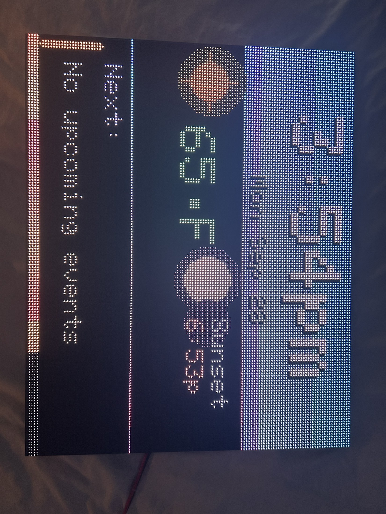
A second on-device screen, shown alongside dashboard mode: a 3x2 grid of tracked tickers, each with the current price, percent change with an up/down indicator, and a small sparkline of recent price movement.
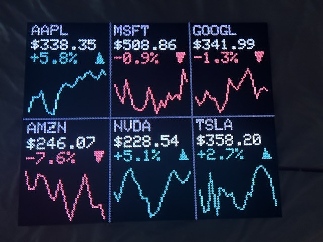
Display bring-up and per-panel chain/rotation calibration are complete and confirmed working across all 10 panels. WiFi image/GIF upload and the standalone dashboard mode -- including its stock ticker screen -- are both live (the wall runs one or the other, per the compile-time flag above). The original map-specific goals -- country coloring and animated flight paths -- are still ahead.
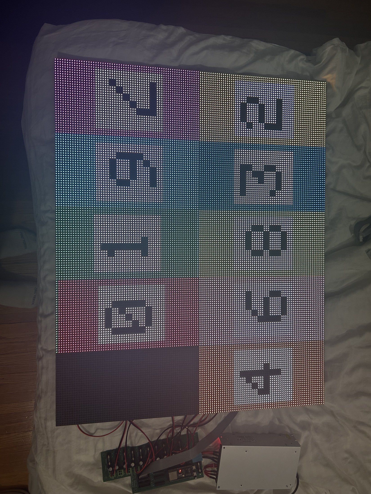
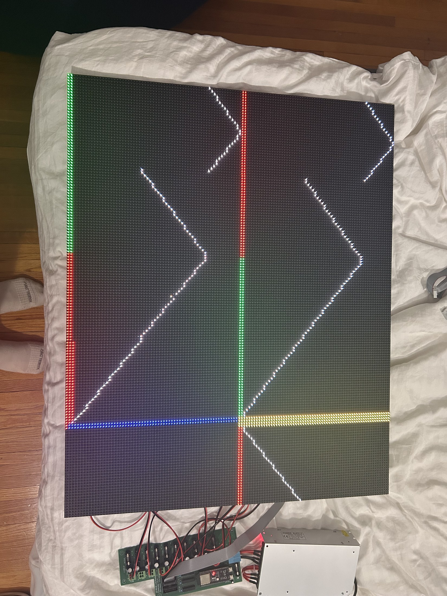
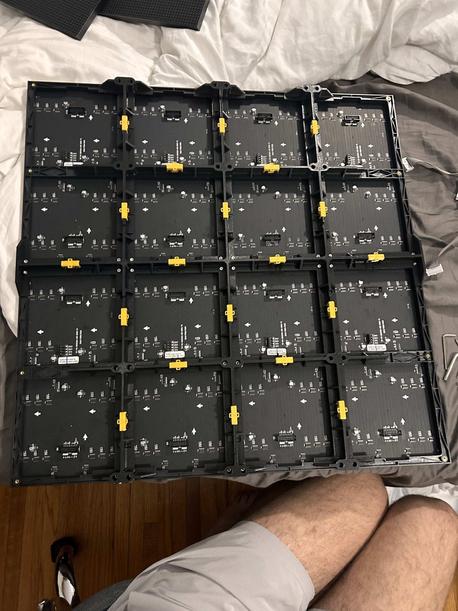